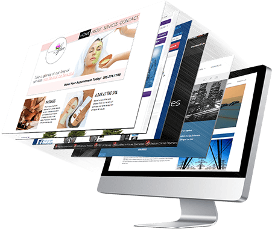
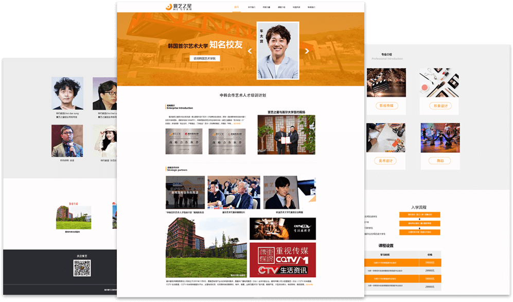
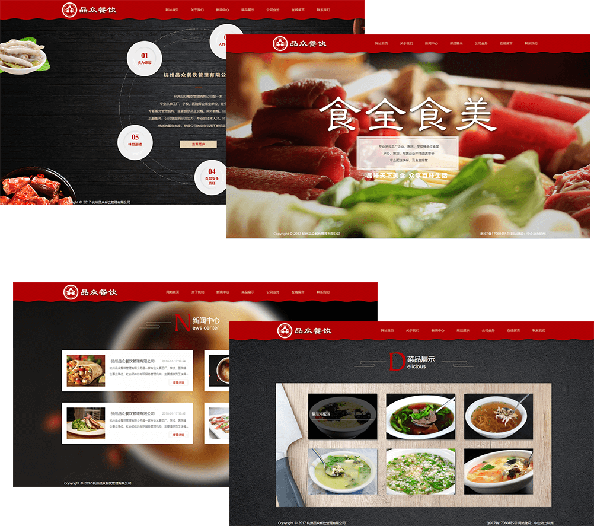
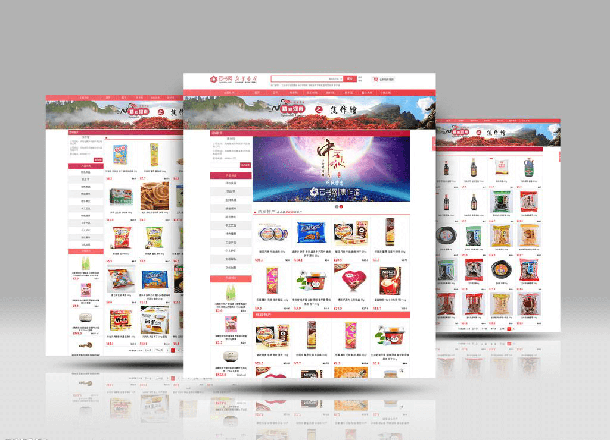
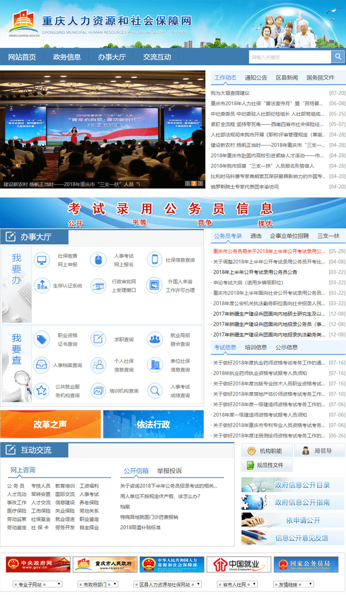
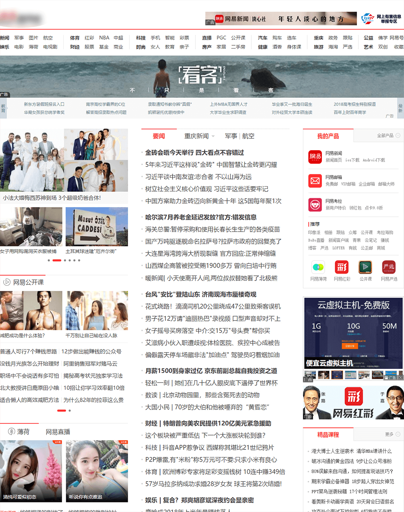

当前所在位置： 企业官网
企业官网
企业形象 / 品牌塑造 / 媒介传播 / 资源信息
企业的网上形象，不仅是企业形象的重要组成部分，更是借助全球互联网的发展，将企业展示给全球的互联网用户，互联网作为信息双向交流的工具已逐渐成为每一个企业青睐的传播方式，被称为是继广播、杂志、报纸、电视台后的第五种媒体 -> 即：数字媒体；传统媒体受时间，地域等限制，且价格较高，从而导致传统媒体的局限性，而数字媒体与传统媒体相比，数字媒体费用相对较低，回报相当较高，能够帮助企业通过互联网，以极快的速度将信息传播，获得更大的发展空间及众多潜在的商业伙伴，数字媒体是全天24小时/全年365天的不间断媒体；越来越多的企业建立了自己的网站，使企业不局限于时间，区域吗，直接面向全球互联网，它的广泛性、高效性为企业带来了不容置疑的传播效率及商业价值。
展示型网站
主要是展示公司形象， 品牌等
营销型网站
主要是以引导顾客关注，发起负反馈的说服性网站
交易型网站
主要提供在线交易平台
服务型网站
主要是提供服务查询，以政务类网站为主
服务型网站
主要是提供服务查询，以政务类网站为主
